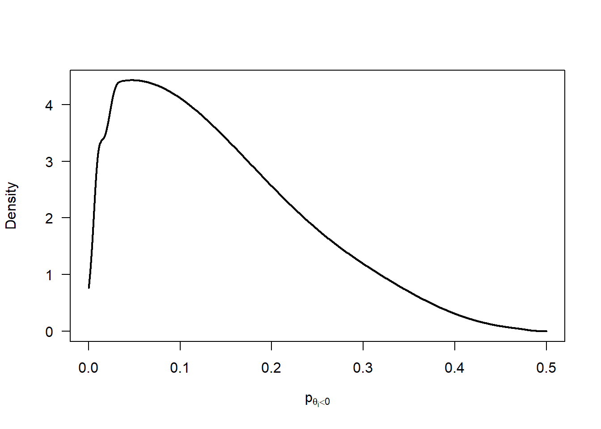
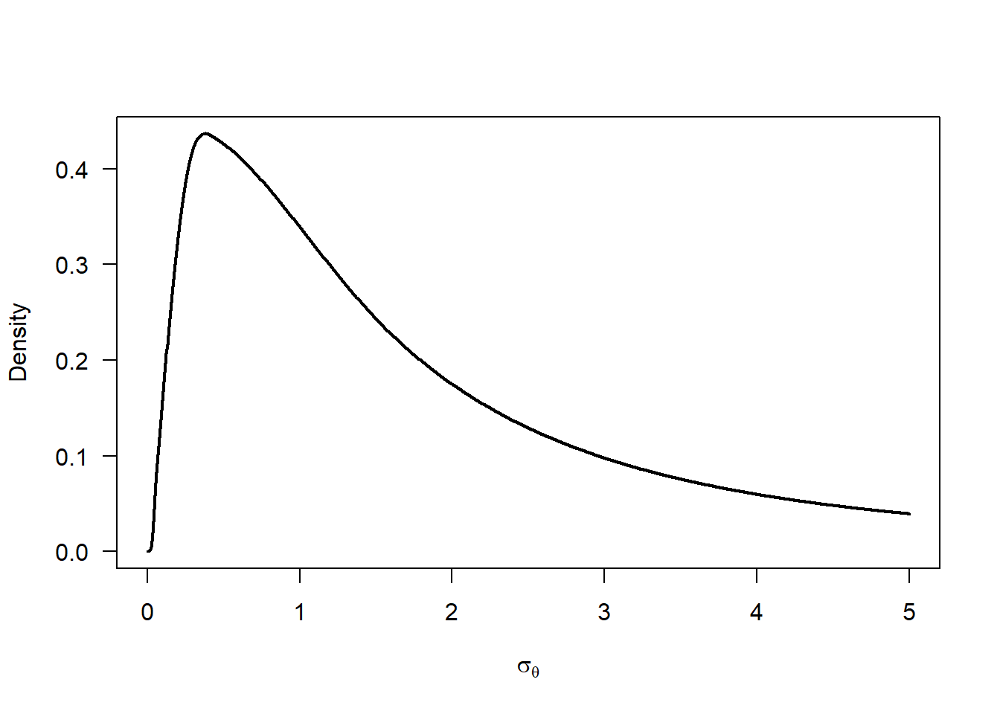
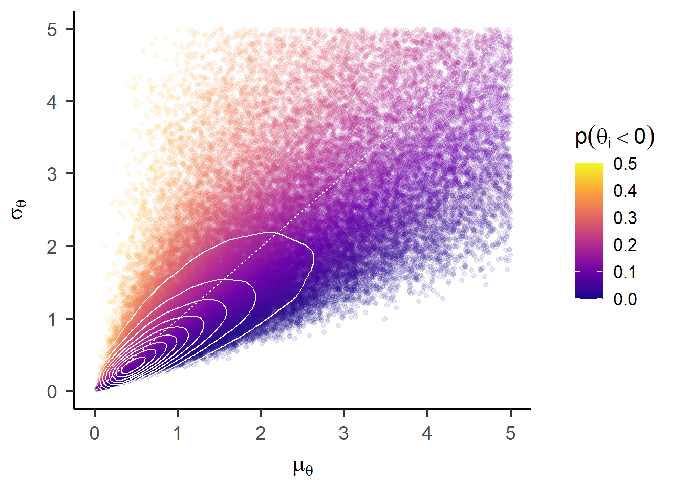
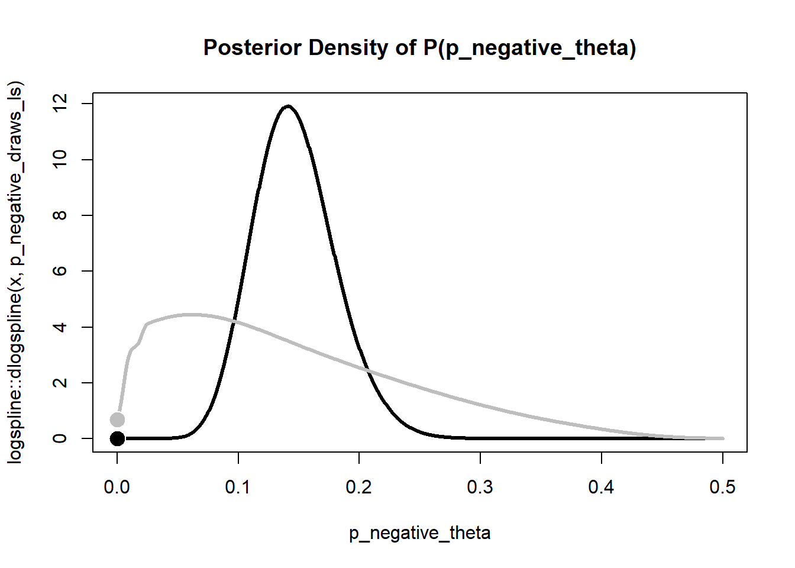
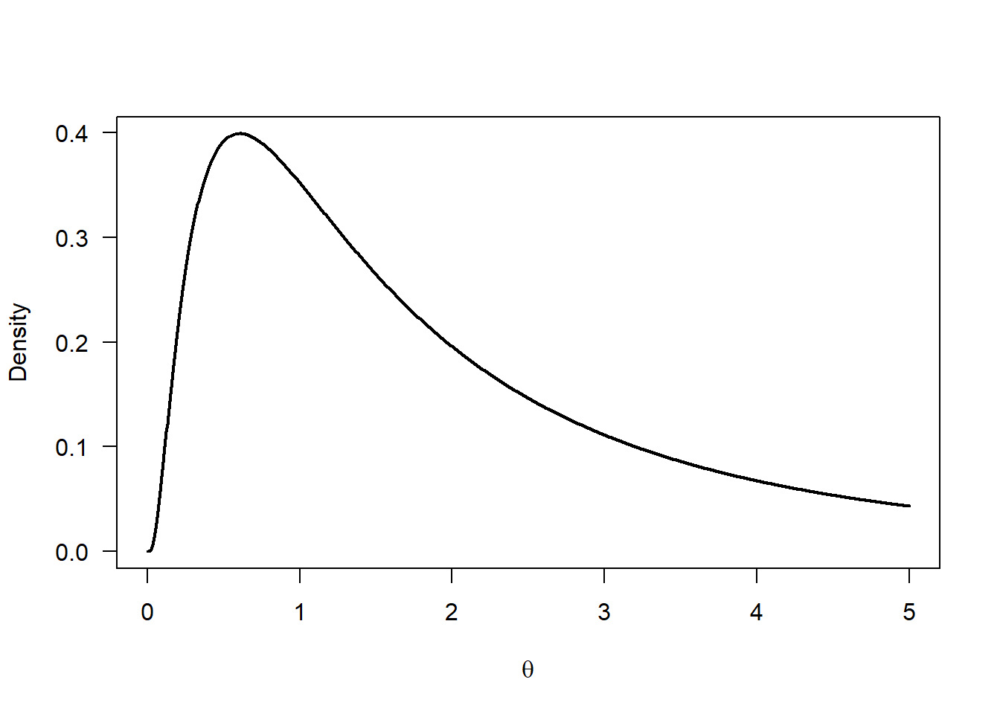
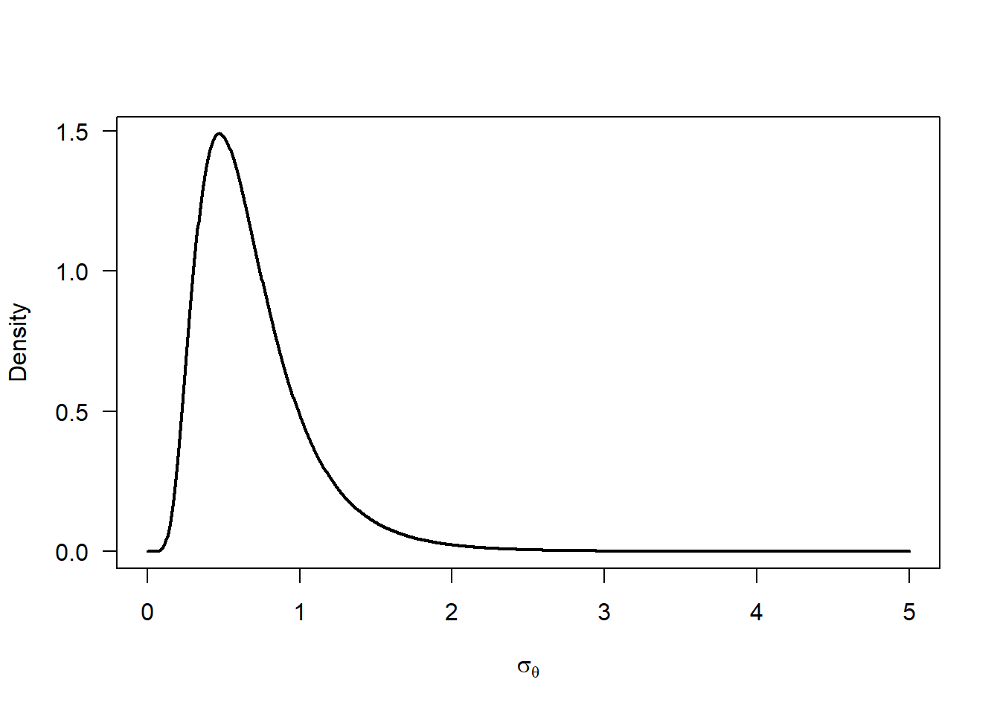
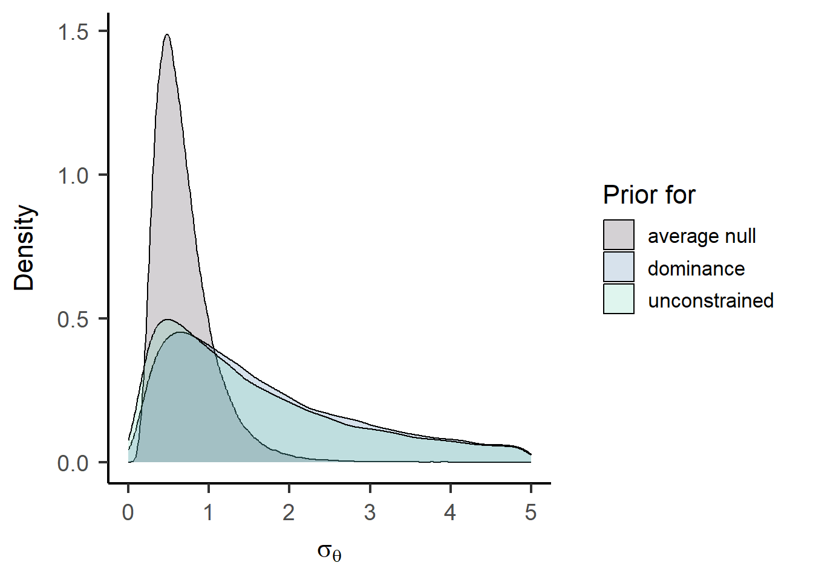

![]()
fle_data <- read.csv("./publishedMotnPostnDataToLoad/myOverallJoV_readyForQualitativeTest.csv")Inidividual Differences Investigation for Flash Lag Effect
For this analysis, we need multiple observations per participant to partition the observed variance in degrees of visual angle (dva) into true individual differences \(\sigma_\theta\) and error variance \(\sigma_\epsilon\), i.e. variance between observations within a participant. Hence, we collapse the data across the two sessions and estimate an overall mean ((Intercept), \(\mu_\theta\)) and individual differences around this mean for each participant (random effect ID, \(\sigma_\theta\)).
fle_lmer <- lmer(dva ~ 1 + (1 | ID), data = fle_data)
summary(fle_lmer)Linear mixed model fit by REML. t-tests use Satterthwaite's method [
lmerModLmerTest]
Formula: dva ~ 1 + (1 | ID)
Data: fle_data
REML criterion at convergence: 649.2
Scaled residuals:
Min 1Q Median 3Q Max
-2.8348 -0.3584 -0.0392 0.4377 3.3681
Random effects:
Groups Name Variance Std.Dev.
ID (Intercept) 2.617 1.618
Residual 1.114 1.055
Number of obs: 170, groups: ID, 85
Fixed effects:
Estimate Std. Error df t value Pr(>|t|)
(Intercept) 1.6971 0.1932 84.0000 8.782 1.63e-13 ***
---
Signif. codes: 0 '***' 0.001 '**' 0.01 '*' 0.05 '.' 0.1 ' ' 1Based on the assumption of a normal distribution of individual differences \(\theta_i \sim \mathcal{N}(\mu_\theta, \sigma_\theta)\), we can compute the proportion of participants with truely negative effects \(p(\theta_i<0)\) as follows:
\[ p(\theta_i<0) = \Phi\left(\frac{- \mu_\theta}{\sigma_\theta}\right) \]
mle_p_negative <- pnorm(
q = 0
, mean = fixef(fle_lmer)[1]
, sd = attr(VarCorr(fle_lmer)$ID, "stddev")
)
mle_p_negative[1] 0.1470737To test whether this proportion is credibly greater than zero, we will fit a Bayesian hierarchical model next.
Bayesian Hierarchical Model
Following the standard hierarchical model structure for individual differences, we define the following model:
\[ \begin{aligned} y_{ij} & \sim \mathcal{N}(\theta_i, \sigma_\epsilon) \\ \theta_i & \sim \mathcal{N}(\mu_\theta, \sigma_\theta) \\ \\ \mu_\theta & \sim \log \mathcal{N}(a_\mu, b_\mu) \\ \\ \sigma_\theta & = -\mu_\theta / \Phi^{-1}(0.5 \; p(\theta_i<0)) \\ p(\theta_i<0) & = \Phi(p^{*}_{\theta_i<0}) \\ p^{*}(\theta_i<0) & \sim \mathcal{N}(a_p, b_p) \\ \\ \sigma_\epsilon^2 & \propto 1/\sigma_\epsilon^2 \end{aligned} \]
We place a log-normal prior on the group mean \(\mu_\theta\) to ensure positive values (but we could replace this by something more flexible). We parameterize the individual differences standard deviation \(\sigma_\theta\) in terms of the proportion of individuals that show a negative flash lag effect (i.e., a flash lead effect) \(p(\theta_i<0)\) to directly estimate this quantity of interest. To improve sampling efficiency, we place a normal prior on the probit-transformed quantity \(p^{*}(\theta_i<0)\). Finally, we place a non-informative prior on the error variance \(\sigma_\epsilon^2\).
Prior distributions
p_negative_prior <- rnorm(1e5, mean = -2/3, sd = 2/3) |>
pnorm(0) |>
(\(x) x / 2)()
p_negative_prior |>
logspline::logspline(lbound = 0, ubound = 0.5) |>
(
\(fit) {
curve(
logspline::dlogspline(x, fit)
, from = 0, to = 0.5
, lwd = 2
, xlab = expression(p[theta[i] < 0])
, ylab = "Density"
, las = 1
, n = 1001
)
}
)()
curve(
dlnorm(x, meanlog = 0.5, sdlog = 1)
, from = 0, to = 5
, lwd = 2
, xlab = expression(mu[theta])
, ylab = "Density"
, las = 1
, n = 1001
)
mu_prior <- rlnorm(1e5, meanlog = 0.5, sdlog = 1)
sigma_prior <- -mu_prior / qnorm(p_negative_prior)
sigma_prior |>
logspline::logspline(lbound = 0) |>
(
\(fit) {
curve(
logspline::dlogspline(x, fit)
, from = 0, to = 5
, lwd = 2
, xlab = expression(sigma[theta])
, ylab = "Density"
, las = 1
, n = 1001
)
}
)()
unconstrained_joint_prior <- data.frame(mu = mu_prior, sigma = sigma_prior, p_negative = p_negative_prior) |>
ggplot() +
aes(x = mu, y = sigma, color = p_negative) +
geom_point(alpha = 0.1) +
stat_density_2d(color = "white", bins = 10) +
geom_abline(intercept = 0, slope = 1, color = "white", linetype = "22") +
# annotate("point", x = fixef(fle_lmer)[1], y = attr(VarCorr(fle_lmer)$ID, "stddev"), shape = 21, color = "black", fill = "white", size = 5) +
labs(
x = expression(mu[theta])
, y = expression(sigma[theta])
, color = expression(p(theta[i] < 0))
) +
scale_color_viridis_c(option = "C", limits = c(0, 0.5)) +
lims(x = c(0, 5), y = c(0, 5)) +
papaja::theme_apa(base_size = 16)
unconstrained_joint_priorWarning: Removed 18153 rows containing non-finite outside the scale range
(`stat_density2d()`).Warning: Removed 18153 rows containing missing values or values outside the scale range
(`geom_point()`).
Model estimation
pse_model <- readLines("./models/pse-unconstrained.stan") |>
paste(collapse = "\n")
fle_stan_data <- list(
N = nrow(fle_data) |> as.integer()
, n_subjects = length(unique(fle_data$ID)) |> as.integer()
, id = as.integer(as.factor(fle_data$ID))
, y = fle_data$dva
# Prior settings
, pi_mean = -2/3
, pi_sd = 2/3
, mu_theta_mean = 0.5
, mu_theta_sd = 1
)
fle_bayes <- rstan::stan(
model_code = pse_model
, data = fle_stan_data
, iter = 1e5/4 + 1000
, warmup = 1000
, chains = 4
, cores = 4
, seed = 123
)WARNING: Rtools is required to build R packages, but is not currently installed.
Please download and install the appropriate version of Rtools for 4.5.1 from
https://cran.r-project.org/bin/windows/Rtools/.Trying to compile a simple C fileRunning "C:/PROGRA~1/R/R-45~1.1/bin/x64/Rcmd.exe" SHLIB foo.c
using C compiler: 'gcc.exe (GCC) 14.3.0'
gcc -I"C:/PROGRA~1/R/R-45~1.1/include" -DNDEBUG -I"C:/Users/User/AppData/Local/R/win-library/4.5/Rcpp/include/" -I"C:/Users/User/AppData/Local/R/win-library/4.5/RcppEigen/include/" -I"C:/Users/User/AppData/Local/R/win-library/4.5/RcppEigen/include/unsupported" -I"C:/Users/User/AppData/Local/R/win-library/4.5/BH/include" -I"C:/Users/User/AppData/Local/R/win-library/4.5/StanHeaders/include/src/" -I"C:/Users/User/AppData/Local/R/win-library/4.5/StanHeaders/include/" -I"C:/Users/User/AppData/Local/R/win-library/4.5/RcppParallel/include/" -DRCPP_PARALLEL_USE_TBB=1 -I"C:/Users/User/AppData/Local/R/win-library/4.5/rstan/include" -DEIGEN_NO_DEBUG -DBOOST_DISABLE_ASSERTS -DBOOST_PENDING_INTEGER_LOG2_HPP -DSTAN_THREADS -DUSE_STANC3 -DSTRICT_R_HEADERS -DBOOST_PHOENIX_NO_VARIADIC_EXPRESSION -D_HAS_AUTO_PTR_ETC=0 -include "C:/Users/User/AppData/Local/R/win-library/4.5/StanHeaders/include/stan/math/prim/fun/Eigen.hpp" -D_REENTRANT -DRCPP_PARALLEL_USE_TBB=1 -I"C:/rtools45/x86_64-w64-mingw32.static.posix/include" -O2 -Wall -std=gnu2x -mfpmath=sse -msse2 -mstackrealign -c foo.c -o foo.o
In file included from <command-line>:
C:/Users/User/AppData/Local/R/win-library/4.5/StanHeaders/include/stan/math/prim/fun/Eigen.hpp:3:10: fatal error: stdexcept: No such file or directory
3 | #include <stdexcept>
| ^~~~~~~~~~~
compilation terminated.
make: *** [C:/PROGRA~1/R/R-45~1.1/etc/x64/Makeconf:289: foo.o] Error 1WARNING: Rtools is required to build R packages, but is not currently installed.
Please download and install the appropriate version of Rtools for 4.5.1 from
https://cran.r-project.org/bin/windows/Rtools/.# model diagnostics
str_post_unconstrained <- data.frame(summary(fle_bayes)$summary)
check_hmc_diagnostics(fle_bayes)
Divergences:0 of 100000 iterations ended with a divergence.
Tree depth:0 of 100000 iterations saturated the maximum tree depth of 10.
Energy:E-BFMI indicated no pathological behavior.Table 1 shows the close agreement between the posterior means of the parameter estimates to the point estimates from the (restricted) maximum likelihood estimation via lmer().
data.frame(
parameter = c("mu_theta", "sigma_theta", "sigma_epsilon", "p_negative_theta")
, bayes = fle_bayes |>
summary(pars = c("mu_theta", "sigma_theta", "sigma_epsilon", "p_negative_theta")) |>
(\(x) x$summary)() |>
as.data.frame() |>
dplyr::pull("mean")
, mle = c(
fixef(fle_lmer)[1],
attr(VarCorr(fle_lmer)$ID, "stddev"),
sigma(fle_lmer),
mle_p_negative
)
) |>
knitr::kable()| parameter | bayes | mle |
|---|---|---|
| mu_theta | 1.6978188 | 1.6971440 |
| sigma_theta | 1.6107703 | 1.6177653 |
| sigma_epsilon | 1.0621039 | 1.0554625 |
| p_negative_theta | 0.1465823 | 0.1470737 |
fle_bayes |>
summary(pars = c("mu_theta", "sigma_theta", "sigma_epsilon", "p_negative_theta")) |>
(\(x) x$summary)() |>
tidyr::as_tibble(rownames = "parameter") |>
dplyr::mutate(
parameter = gsub("mu", "$\\\\mu", parameter) |>
gsub("sigma", "$\\\\sigma", x = _) |>
gsub("_(.+)", "_{\\\\\\1}$", x = _) |>
gsub("^p.+", "$p(\\\\theta_i<0)$", x = _)
) |>
knitr::kable(digits = 3)| parameter | mean | se_mean | sd | 2.5% | 25% | 50% | 75% | 97.5% | n_eff | Rhat |
|---|---|---|---|---|---|---|---|---|---|---|
| \(\mu_{\theta}\) | 1.698 | 0 | 0.187 | 1.333 | 1.573 | 1.697 | 1.822 | 2.068 | 155859.50 | 1 |
| \(\sigma_{\theta}\) | 1.611 | 0 | 0.152 | 1.334 | 1.505 | 1.603 | 1.708 | 1.931 | 116168.11 | 1 |
| \(\sigma_{\epsilon}\) | 1.062 | 0 | 0.082 | 0.915 | 1.004 | 1.057 | 1.114 | 1.239 | 58798.46 | 1 |
| \(p(\theta_i<0)\) | 0.147 | 0 | 0.034 | 0.086 | 0.123 | 0.145 | 0.168 | 0.218 | 140043.51 | 1 |
(tidybayes::gather_draws(
fle_bayes
, mu_theta, sigma_theta, p_negative_theta
) |>
dplyr::mutate(
.variable = factor(
.variable
, levels = c("mu_theta", "sigma_theta", "p_negative_theta")
, labels = c("mu[theta]", "sigma[theta]", "p(theta[i] < 0)")
)
) |>
ggplot() +
aes(x = .value, fill = after_stat(level)) +
stat_halfeye(fill_type = "segments", normalize = "panels", .width = c(.5, .8, .95, .99, 1), slab_color = "black", alpha = 0.7, fatten_point = 2, interval_size_range = c(1, 2)) +
annotate("point", x = c(0, 0.5), y = 0, color = "white") +
scale_fill_viridis_d(option = "B", begin = 0.9, end = 0.1) +
guides(
fill = guide_legend(
title = "Credible level"
, override.aes = list(color = NA)
, reverse = TRUE
, direction = "horizontal"
, title.position = "top"
, title.hjust = 0.5
)
) +
coord_cartesian(ylim = c(-0.05, NA)) +
facet_wrap(
~ .variable
, scales = "free"
, labeller = label_parsed
, ncol = 2
) +
labs(x = "Parameter value") +
papaja::theme_apa(base_size = 16) +
theme(
axis.line.y = element_blank()
, axis.ticks.y = element_blank()
, axis.text.y = element_blank()
, axis.title.y = element_blank()
# , legend.title.position = "top"
)) |>
lemon::reposition_legend("center", panel = 'panel-2-2')
Bayes factor approximations
Finally, we compute the Bayes factor in favor of the assumption of an unconstrained population distribution (\(p(\theta_i<0) > 0\)) over the strictly positive population distribution (stochastic dominance). One approach is to approximate this Bayes factor using the Savage-Dickey density ratio for \(p(\theta_i<0) = 0\).
# Extract posterior samples for p_negative_theta
p_negative_draws <- tidybayes::gather_draws(fle_bayes, p_negative_theta)
# logspline approximation of posterior density
p_negative_draws_ls <- logspline::logspline(
p_negative_draws$.value
, lbound = 0, ubound = 0.5
)
# logspline approximation of prior density
prior_ls <- rnorm(1e5, mean = fle_stan_data$pi_mean, sd = fle_stan_data$pi_sd) |>
pnorm() |>
(\(x) x / 2)() |>
logspline::logspline(lbound = 0, ubound = 0.5)
prior_density <- logspline::dlogspline(0, prior_ls)
posterior_density <- logspline::dlogspline(0, p_negative_draws_ls)
curve(
logspline::dlogspline(x, p_negative_draws_ls)
, from = 0, to = 0.5
, col = "black", lwd = 3
, main = "Posterior Density of P(p_negative_theta)"
, xlab = "p_negative_theta"
, n = 1001
)
curve(
logspline::dlogspline(x, prior_ls)
, from = 0, to = 0.5
, col = "grey", lwd = 3
, add = TRUE
, n = 1001
)
points(
x = c(0, 0)
, y = c(prior_density, posterior_density)
, col = c("white", "white")
, bg = c("grey", "black")
, pch = 21
, cex = 2
)
bayes_factor_10 <- prior_density / posterior_density
bayes_factor_10[1] 143175We find overwhelming evidence for the unconstrained population distribution. In other words, the assumption that noone exhibits a flash lead effect, seems highly implausible.
This approach is, however, approximate and conceptually problematic. Under the assumption of a normal population distribution, the probability of negative effects cannot be 0, \(p(\theta_i<0) \neq 0\). So let’s try another approach.
For an exact model comparison, we need to replace the assumed normal population distribution by a distribution family with support over the positive domain (e.g., truncated normal, log-normal, gamma, or inverse gamma distribution). This raises questions about the most appropriate distribution that lead us down the path of fitting and averaging multiple models. I will resist that temptation and proceed with a truncated normal distribution for now.
Stochastic dominance analysis (?)
Following @doi:10.3758/s13423-018-1522-x : Bayesian model comparison with various Bayesian hierarchical models, each defined by different constraints on parameters. Unconstrained model without any equality or order constraints on the individual effects is defined above.
Positive effect model (dominance model): Order constraint, constrains individual effects to be positive, but effects differ/vary interindividually. Truncated normal distribution as suggested by literature.
Defining \(\sigma_{\theta}\) the same way as in the unconstrained model would not make any sense conceptually, since in this model \(p(\theta_i<0)\) is assumed to be zero. Therefore chose log-normal as informative prior (as prior of unconstrained model was similar to prior for \(\mu_\theta\)).
\[ \begin{aligned} y_{ij} & \sim \mathcal{N}(\theta_i, \sigma_\epsilon) \\ \\ \theta_i & \sim \mathcal{N}^+(\mu_\theta, \sigma_\theta) \\ \sigma_\epsilon^2 & \propto 1/\sigma_\epsilon^2 \\ \\ \mu_\theta & \sim \log \mathcal{N}(a_\mu, b_\mu) \\ \sigma_\theta & \sim \log \mathcal{N}(a_\sigma, b_\sigma) \\ \end{aligned} \]
Common-effect model: No individual variablity in effects, all inidividual share a common, constant effect different from zero (positive). Unlikely to be an accurate representation of effects in psychology, but used as (1) benchmark to check for individual differences (model could be preferred should individual difference be very small) and (2) design check (design might not be able to capture individual differences).
Priors are only needed for \(\theta\) (as there is uncertainty regarding the size of the common effect) and \(\sigma_\epsilon^2\). Logarithmic normal distribution as prior for \(\theta\), constraining it to positive real numbers (paralleling prior of \(\mu_{\theta}\) in unconstrained model).
\[ \begin{aligned} y_{ij} & \sim \mathcal{N}(\theta, \sigma_\epsilon) \\ \\ \theta & \sim \log \mathcal{N}(a_\mu, b_\mu) \\ \sigma_\epsilon^2 & \propto 1/\sigma_\epsilon^2 \end{aligned} \]
Average null model: Average effect across individuals is constrained to be zero, but effects are assumed to vary across individuals. Conceptualized as a more forgiving alternative to the null model (see below), less reactive to contaminated data. \(\theta_i\) are modeled as normally distributed around a mean of zero. Only slight deviations from zero align with the idea of this model as an alternative to the null model, therefore steep log-normal distribution with relatively small mean to be chosen as prior for \(\sigma_{\theta}\) (see average null vs unconstrained).
\[ \begin{aligned} y_{ij} & \sim \mathcal{N}(\theta_i, \sigma_\epsilon) \\ \\ \theta_i & \sim \mathcal{N}(0, \sigma_\theta) \\ \sigma_\epsilon^2 & \propto 1/\sigma_\epsilon^2 \\ \\ \sigma_\theta & \sim \log \mathcal{N}(a_\sigma, b_\sigma) \end{aligned} \]
Null model: Specifies a true effect of zero for all individuals, most constrained model. Used as benchmark for no effect and no interindividual variability. There is no uncertainty regarding the size of the effect, as it is assumed to be zero. So no prior for theta. Only prior for sigma (measurement error around true \(\theta = 0\)) needed.
\[ \begin{aligned} y_{ij} & \sim \mathcal{N}(0, \sigma_\epsilon) \\ \\ \sigma_\epsilon^2 & \propto 1/\sigma_\epsilon^2 \end{aligned} \]
(1) Dominance vs unconstrained
Priors chosen to be similar to priors of unconstrained model, therefore approximately same percentage of theoretically negative \(\theta_i\). But this time, negative \(\theta_i\) are excluded / impossible by stan model definition (truncated normal distribution).
curve(
dlnorm(x, meanlog = 0.5, sdlog = 1)
, from = 0, to = 5
, lwd = 2
, xlab = expression(mu[theta])
, ylab = "Density"
, las = 1
, n = 1001
)
curve(
dlnorm(x, meanlog = 0.5, sdlog = 1)
, from = 0, to = 5
, lwd = 2
, xlab = expression(sigma[theta])
, ylab = "Density"
, las = 1
, n = 1001
)pse_dominance_model <- readLines("./models/pse-dominance.stan") |>
paste(collapse = "\n")
fle_stan_dominance_data <- list(
N = nrow(fle_data) |> as.integer()
, n_subjects = length(unique(fle_data$ID)) |> as.integer()
, id = as.integer(as.factor(fle_data$ID))
, y = fle_data$dva
# Prior settings
, mu_theta_mean = 0.5
, mu_theta_sd = 1
, sigma_theta_mean = 0.5
, sigma_theta_sd = 1
)
fle_dominance_bayes <- rstan::stan(
model_code = pse_dominance_model
, data = fle_stan_dominance_data
, iter = 1e5/4 + 1000
, warmup = 1000
, chains = 4
, cores = 4
, seed = 123
)WARNING: Rtools is required to build R packages, but is not currently installed.
Please download and install the appropriate version of Rtools for 4.5.1 from
https://cran.r-project.org/bin/windows/Rtools/.Trying to compile a simple C fileRunning "C:/PROGRA~1/R/R-45~1.1/bin/x64/Rcmd.exe" SHLIB foo.c
using C compiler: 'gcc.exe (GCC) 14.3.0'
gcc -I"C:/PROGRA~1/R/R-45~1.1/include" -DNDEBUG -I"C:/Users/User/AppData/Local/R/win-library/4.5/Rcpp/include/" -I"C:/Users/User/AppData/Local/R/win-library/4.5/RcppEigen/include/" -I"C:/Users/User/AppData/Local/R/win-library/4.5/RcppEigen/include/unsupported" -I"C:/Users/User/AppData/Local/R/win-library/4.5/BH/include" -I"C:/Users/User/AppData/Local/R/win-library/4.5/StanHeaders/include/src/" -I"C:/Users/User/AppData/Local/R/win-library/4.5/StanHeaders/include/" -I"C:/Users/User/AppData/Local/R/win-library/4.5/RcppParallel/include/" -DRCPP_PARALLEL_USE_TBB=1 -I"C:/Users/User/AppData/Local/R/win-library/4.5/rstan/include" -DEIGEN_NO_DEBUG -DBOOST_DISABLE_ASSERTS -DBOOST_PENDING_INTEGER_LOG2_HPP -DSTAN_THREADS -DUSE_STANC3 -DSTRICT_R_HEADERS -DBOOST_PHOENIX_NO_VARIADIC_EXPRESSION -D_HAS_AUTO_PTR_ETC=0 -include "C:/Users/User/AppData/Local/R/win-library/4.5/StanHeaders/include/stan/math/prim/fun/Eigen.hpp" -D_REENTRANT -DRCPP_PARALLEL_USE_TBB=1 -I"C:/rtools45/x86_64-w64-mingw32.static.posix/include" -O2 -Wall -std=gnu2x -mfpmath=sse -msse2 -mstackrealign -c foo.c -o foo.o
In file included from <command-line>:
C:/Users/User/AppData/Local/R/win-library/4.5/StanHeaders/include/stan/math/prim/fun/Eigen.hpp:3:10: fatal error: stdexcept: No such file or directory
3 | #include <stdexcept>
| ^~~~~~~~~~~
compilation terminated.
make: *** [C:/PROGRA~1/R/R-45~1.1/etc/x64/Makeconf:289: foo.o] Error 1WARNING: Rtools is required to build R packages, but is not currently installed.
Please download and install the appropriate version of Rtools for 4.5.1 from
https://cran.r-project.org/bin/windows/Rtools/.# model diagnostics
str_post_dominance<- data.frame(summary(fle_dominance_bayes)$summary)
check_hmc_diagnostics(fle_dominance_bayes)
Divergences:0 of 100000 iterations ended with a divergence.
Tree depth:0 of 100000 iterations saturated the maximum tree depth of 10.
Energy:E-BFMI indicated no pathological behavior.unconstrained_ml <- bridge_sampler(fle_bayes, method = "warp3", repetitions = 30, silent = TRUE)
dominance_ml <- bridge_sampler(fle_dominance_bayes, method = "warp3", repetitions = 30, silent = TRUE)
# bayes factor
bayes_factor(unconstrained_ml, dominance_ml)Estimated Bayes factor (based on medians of log marginal likelihood estimates)
in favor of x1 over x2: 68952027.35067
Range of estimates: 64049164.55602 to 76217946.94596
Interquartile range: 4282399.29219Comparing to a strictly positive population distribution (truncated normal in this case), we find overwhelming evidence for an unconstrained population distribution, implying that some individuals could truly exhibit a flash lead effect. In other words, these results suggest that it is highly unlikely that no one exhibits a true lead effect.
(2) Common vs unconstrained
curve(
dlnorm(x, meanlog = 0.5, sdlog = 1)
, from = 0, to = 5
, lwd = 2
, xlab = expression(theta)
, ylab = "Density"
, las = 1
, n = 1001
)
pse_common_model <- readLines("./models/pse-common.stan") |>
paste(collapse = "\n")
fle_stan_common_data <- list(
N = nrow(fle_data) |> as.integer()
, n_subjects = length(unique(fle_data$ID)) |> as.integer()
, id = as.integer(as.factor(fle_data$ID))
, y = fle_data$dva
# Prior settings
, theta_mean = 0.5
, theta_sd = 1
)
fle_common_bayes <- rstan::stan(
model_code = pse_common_model
, data = fle_stan_common_data
, iter = 1e5/4 + 1000
, warmup = 1000
, chains = 4
, cores = 4
, seed = 123
)WARNING: Rtools is required to build R packages, but is not currently installed.
Please download and install the appropriate version of Rtools for 4.5.1 from
https://cran.r-project.org/bin/windows/Rtools/.Trying to compile a simple C fileRunning "C:/PROGRA~1/R/R-45~1.1/bin/x64/Rcmd.exe" SHLIB foo.c
using C compiler: 'gcc.exe (GCC) 14.3.0'
gcc -I"C:/PROGRA~1/R/R-45~1.1/include" -DNDEBUG -I"C:/Users/User/AppData/Local/R/win-library/4.5/Rcpp/include/" -I"C:/Users/User/AppData/Local/R/win-library/4.5/RcppEigen/include/" -I"C:/Users/User/AppData/Local/R/win-library/4.5/RcppEigen/include/unsupported" -I"C:/Users/User/AppData/Local/R/win-library/4.5/BH/include" -I"C:/Users/User/AppData/Local/R/win-library/4.5/StanHeaders/include/src/" -I"C:/Users/User/AppData/Local/R/win-library/4.5/StanHeaders/include/" -I"C:/Users/User/AppData/Local/R/win-library/4.5/RcppParallel/include/" -DRCPP_PARALLEL_USE_TBB=1 -I"C:/Users/User/AppData/Local/R/win-library/4.5/rstan/include" -DEIGEN_NO_DEBUG -DBOOST_DISABLE_ASSERTS -DBOOST_PENDING_INTEGER_LOG2_HPP -DSTAN_THREADS -DUSE_STANC3 -DSTRICT_R_HEADERS -DBOOST_PHOENIX_NO_VARIADIC_EXPRESSION -D_HAS_AUTO_PTR_ETC=0 -include "C:/Users/User/AppData/Local/R/win-library/4.5/StanHeaders/include/stan/math/prim/fun/Eigen.hpp" -D_REENTRANT -DRCPP_PARALLEL_USE_TBB=1 -I"C:/rtools45/x86_64-w64-mingw32.static.posix/include" -O2 -Wall -std=gnu2x -mfpmath=sse -msse2 -mstackrealign -c foo.c -o foo.o
In file included from <command-line>:
C:/Users/User/AppData/Local/R/win-library/4.5/StanHeaders/include/stan/math/prim/fun/Eigen.hpp:3:10: fatal error: stdexcept: No such file or directory
3 | #include <stdexcept>
| ^~~~~~~~~~~
compilation terminated.
make: *** [C:/PROGRA~1/R/R-45~1.1/etc/x64/Makeconf:289: foo.o] Error 1WARNING: Rtools is required to build R packages, but is not currently installed.
Please download and install the appropriate version of Rtools for 4.5.1 from
https://cran.r-project.org/bin/windows/Rtools/.# model diagnostics
str_post_common <- data.frame(summary(fle_common_bayes)$summary)
check_hmc_diagnostics(fle_common_bayes)
Divergences:0 of 100000 iterations ended with a divergence.
Tree depth:0 of 100000 iterations saturated the maximum tree depth of 10.
Energy:E-BFMI indicated no pathological behavior.common_ml <- bridge_sampler(fle_common_bayes, method = "warp3", repetitions = 30, silent = TRUE)
bayes_factor(unconstrained_ml, common_ml)Estimated Bayes factor (based on medians of log marginal likelihood estimates)
in favor of x1 over x2: 1384910385045.91138
Range of estimates: 1382267502467.16919 to 1387270069365.84204
Interquartile range: 2253221899.83423We find overwhelming evidence in favor of the unconstrained model over the common effect model. It therefore seems highly implausible that all participants share a common true effect of the same size, as models allowing for interindividual differences in true effects are a better fit for the data. These results also validate / support the study design, as interindividual differences in true effects were measureable.
(3) Average null vs unconstrained
curve(
dlnorm(x, meanlog = -0.5, sdlog = 0.5)
, from = 0, to = 5
, lwd = 2
, xlab = expression(sigma[theta])
, ylab = "Density"
, las = 1
, n = 1001
)
# Mean of prior sigma_theta
exp(-0.5 + (0.5)^2/2)[1] 0.6872893pse_average_model <- readLines("./models/pse-average-null.stan") |>
paste(collapse = "\n")
fle_stan_average_data <- list(
N = nrow(fle_data) |> as.integer()
, n_subjects = length(unique(fle_data$ID)) |> as.integer()
, id = as.integer(as.factor(fle_data$ID))
, y = fle_data$dva
# Prior settings
, sigma_theta_mean = -0.5
, sigma_theta_sd = 0.5
)
fle_average_bayes <- rstan::stan(
model_code = pse_average_model
, data = fle_stan_average_data
, iter = 1e5/4 + 1000
, warmup = 1000
, chains = 4
, cores = 4
, seed = 123
)WARNING: Rtools is required to build R packages, but is not currently installed.
Please download and install the appropriate version of Rtools for 4.5.1 from
https://cran.r-project.org/bin/windows/Rtools/.Trying to compile a simple C fileRunning "C:/PROGRA~1/R/R-45~1.1/bin/x64/Rcmd.exe" SHLIB foo.c
using C compiler: 'gcc.exe (GCC) 14.3.0'
gcc -I"C:/PROGRA~1/R/R-45~1.1/include" -DNDEBUG -I"C:/Users/User/AppData/Local/R/win-library/4.5/Rcpp/include/" -I"C:/Users/User/AppData/Local/R/win-library/4.5/RcppEigen/include/" -I"C:/Users/User/AppData/Local/R/win-library/4.5/RcppEigen/include/unsupported" -I"C:/Users/User/AppData/Local/R/win-library/4.5/BH/include" -I"C:/Users/User/AppData/Local/R/win-library/4.5/StanHeaders/include/src/" -I"C:/Users/User/AppData/Local/R/win-library/4.5/StanHeaders/include/" -I"C:/Users/User/AppData/Local/R/win-library/4.5/RcppParallel/include/" -DRCPP_PARALLEL_USE_TBB=1 -I"C:/Users/User/AppData/Local/R/win-library/4.5/rstan/include" -DEIGEN_NO_DEBUG -DBOOST_DISABLE_ASSERTS -DBOOST_PENDING_INTEGER_LOG2_HPP -DSTAN_THREADS -DUSE_STANC3 -DSTRICT_R_HEADERS -DBOOST_PHOENIX_NO_VARIADIC_EXPRESSION -D_HAS_AUTO_PTR_ETC=0 -include "C:/Users/User/AppData/Local/R/win-library/4.5/StanHeaders/include/stan/math/prim/fun/Eigen.hpp" -D_REENTRANT -DRCPP_PARALLEL_USE_TBB=1 -I"C:/rtools45/x86_64-w64-mingw32.static.posix/include" -O2 -Wall -std=gnu2x -mfpmath=sse -msse2 -mstackrealign -c foo.c -o foo.o
In file included from <command-line>:
C:/Users/User/AppData/Local/R/win-library/4.5/StanHeaders/include/stan/math/prim/fun/Eigen.hpp:3:10: fatal error: stdexcept: No such file or directory
3 | #include <stdexcept>
| ^~~~~~~~~~~
compilation terminated.
make: *** [C:/PROGRA~1/R/R-45~1.1/etc/x64/Makeconf:289: foo.o] Error 1WARNING: Rtools is required to build R packages, but is not currently installed.
Please download and install the appropriate version of Rtools for 4.5.1 from
https://cran.r-project.org/bin/windows/Rtools/.# model diagnostics
str_post_average <- data.frame(summary(fle_average_bayes)$summary)
check_hmc_diagnostics(fle_average_bayes)
Divergences:0 of 100000 iterations ended with a divergence.
Tree depth:0 of 100000 iterations saturated the maximum tree depth of 10.
Energy:E-BFMI indicated no pathological behavior.average_ml <- bridge_sampler(fle_average_bayes, method = "warp3", repetitions = 30, silent = TRUE)
bayes_factor(unconstrained_ml, average_ml)Estimated Bayes factor (based on medians of log marginal likelihood estimates)
in favor of x1 over x2: 4651831424885.09668
Range of estimates: 4636761511620.84668 to 4668722682563.24023
Interquartile range: 8077851866.02441(4) Null vs unconstrained
pse_null_model <- readLines("./models/pse-null.stan") |>
paste(collapse = "\n")
fle_stan_null_data <- list(
N = nrow(fle_data) |> as.integer()
, n_subjects = length(unique(fle_data$ID)) |> as.integer()
, id = as.integer(as.factor(fle_data$ID))
, y = fle_data$dva
)
fle_null_bayes <- rstan::stan(
model_code = pse_null_model
, data = fle_stan_null_data
, iter = 1e5/4 + 1000
, warmup = 1000
, chains = 4
, cores = 4
, seed = 123
)WARNING: Rtools is required to build R packages, but is not currently installed.
Please download and install the appropriate version of Rtools for 4.5.1 from
https://cran.r-project.org/bin/windows/Rtools/.Trying to compile a simple C fileRunning "C:/PROGRA~1/R/R-45~1.1/bin/x64/Rcmd.exe" SHLIB foo.c
using C compiler: 'gcc.exe (GCC) 14.3.0'
gcc -I"C:/PROGRA~1/R/R-45~1.1/include" -DNDEBUG -I"C:/Users/User/AppData/Local/R/win-library/4.5/Rcpp/include/" -I"C:/Users/User/AppData/Local/R/win-library/4.5/RcppEigen/include/" -I"C:/Users/User/AppData/Local/R/win-library/4.5/RcppEigen/include/unsupported" -I"C:/Users/User/AppData/Local/R/win-library/4.5/BH/include" -I"C:/Users/User/AppData/Local/R/win-library/4.5/StanHeaders/include/src/" -I"C:/Users/User/AppData/Local/R/win-library/4.5/StanHeaders/include/" -I"C:/Users/User/AppData/Local/R/win-library/4.5/RcppParallel/include/" -DRCPP_PARALLEL_USE_TBB=1 -I"C:/Users/User/AppData/Local/R/win-library/4.5/rstan/include" -DEIGEN_NO_DEBUG -DBOOST_DISABLE_ASSERTS -DBOOST_PENDING_INTEGER_LOG2_HPP -DSTAN_THREADS -DUSE_STANC3 -DSTRICT_R_HEADERS -DBOOST_PHOENIX_NO_VARIADIC_EXPRESSION -D_HAS_AUTO_PTR_ETC=0 -include "C:/Users/User/AppData/Local/R/win-library/4.5/StanHeaders/include/stan/math/prim/fun/Eigen.hpp" -D_REENTRANT -DRCPP_PARALLEL_USE_TBB=1 -I"C:/rtools45/x86_64-w64-mingw32.static.posix/include" -O2 -Wall -std=gnu2x -mfpmath=sse -msse2 -mstackrealign -c foo.c -o foo.o
In file included from <command-line>:
C:/Users/User/AppData/Local/R/win-library/4.5/StanHeaders/include/stan/math/prim/fun/Eigen.hpp:3:10: fatal error: stdexcept: No such file or directory
3 | #include <stdexcept>
| ^~~~~~~~~~~
compilation terminated.
make: *** [C:/PROGRA~1/R/R-45~1.1/etc/x64/Makeconf:289: foo.o] Error 1WARNING: Rtools is required to build R packages, but is not currently installed.
Please download and install the appropriate version of Rtools for 4.5.1 from
https://cran.r-project.org/bin/windows/Rtools/.# model diagnostics
str_post_null <- data.frame(summary(fle_null_bayes)$summary)
check_hmc_diagnostics(fle_null_bayes)
Divergences:0 of 100000 iterations ended with a divergence.
Tree depth:0 of 100000 iterations saturated the maximum tree depth of 10.
Energy:E-BFMI indicated no pathological behavior.null_ml <- bridge_sampler(fle_null_bayes, method = "warp3", repetitions = 30, silent = TRUE)Warning: effective sample size cannot be calculated, has been replaced by
number of samples.bayes_factor(unconstrained_ml, null_ml)Estimated Bayes factor (based on medians of log marginal likelihood estimates)
in favor of x1 over x2: 307834621758921415446626064640602.00000
Range of estimates: 307219797968208821760002062626244.00000 to 308335823700413263242028022628228.00000
Interquartile range: 508728581792954241408646460248.00000Bayesian model comparison
Bayes factor summary table
bfs_base_unc <- c(bayes_factor(null_ml, unconstrained_ml)$bf_median_based
, bayes_factor(average_ml, unconstrained_ml)$bf_median_based
, bayes_factor(common_ml, unconstrained_ml)$bf_median_based
, bayes_factor(dominance_ml, unconstrained_ml)$bf_median_based
, 1
)
# Naive posterior probability: naive assumption that prior odds = 1 for all model comparisons
# -> post prob = bf / sum(bf)
npp_base_unc <- bfs_base_unc / sum(bfs_base_unc)
# model diagnostics
rhat <- c(max(str_post_null$Rhat)
,max(str_post_average$Rhat)
,max(str_post_common$Rhat)
,max(str_post_dominance$Rhat)
,max(str_post_unconstrained$Rhat))
# bridge sampling CV
bridge.cv <- c(sd(null_ml$logml)/abs(mean(null_ml$logml))
,sd(average_ml$logml)/abs(mean(average_ml$logml))
,sd(common_ml$logml)/abs(mean(common_ml$logml))
,sd(dominance_ml$logml)/abs(mean(dominance_ml$logml))
,sd(unconstrained_ml$logml)/abs(mean(unconstrained_ml$logml)))
# summary table
data.frame(
model = c("Null model", "Average null model", "Common model", "Dominance model", "Unconstrained model")
, bf = printnum(bfs_base_unc, format = "e")
, npp = printnum(npp_base_unc, gt1 = F, digits = 2)
, rhat = printnum(rhat, digits = 3)
, cv = printnum(bridge.cv, format = "e")
) |> knitr::kable(
col.names = c("Model ($i$)", "$BF_{i/unconstrained}$", "NPP", "max.$\\hat{R}$", "Bridge Sampling CV")
)| Model (\(i\)) | \(BF_{i/unconstrained}\) | NPP | max.\(\hat{R}\) | Bridge Sampling CV |
|---|---|---|---|---|
| Null model | \(3.25 \times 10^{-33}\) | .00 | 1.000 | \(3.76 \times 10^{-8}\) |
| Average null model | \(2.15 \times 10^{-13}\) | .00 | 1.000 | \(3.78 \times 10^{-6}\) |
| Common model | \(7.22 \times 10^{-13}\) | .00 | 1.000 | \(2.23 \times 10^{-7}\) |
| Dominance model | \(1.45 \times 10^{-8}\) | .00 | 1.001 | \(1.28 \times 10^{-4}\) |
| Unconstrained model | \(1.00\) | > .99 | 1.000 | \(3.13 \times 10^{-6}\) |
In summary, we find overwhelming evidence for the unconstrained model and the existence of not only flash lag, but also flash lead effects. Given the data at hand, the posterior probability that no one exhibits a flash lead effect is practically zero (with a priori assumption that all models are equally likely).
Prior settings for \(\sigma_{\theta}\)
data.frame(priors = c(sigma_prior
,rlnorm(1e5, meanlog = 0.5, sdlog = 1)
,rlnorm(1e5, meanlog = -0.5, sdlog = 0.5))
,model = rep(c("unconstrained","dominance","average null"), each = 1e5)) |>
ggplot() +
aes(x = priors, fill = model) +
lims(x = c(0,5)) +
geom_density(alpha = 0.2, linewidth = 0.5) +
labs(
x = expression(sigma[theta])
, y = "Density"
, fill = "Prior for"
) +
scale_color_viridis_d(option = "G", begin = 0.1, end = 0.8, aesthetics = "fill") +
papaja::theme_apa(base_size = 16)Warning: Removed 27671 rows containing non-finite outside the scale range
(`stat_density()`).